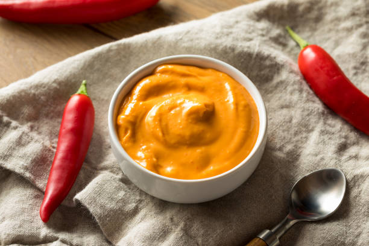

Chilli Mayo Instructions
Back to About Page

Description:
This recipe will guide you through every step on how to create a chilli crisp mayo sauce.
Ingredients
- 2/3 cup mayonnaise
- 1 tablespoon spicy chili crisp, such as Lao Gan Ma®1 tablespoon spicy chili crisp, such as Lao Gan Ma®
Steps
- Place mayonnaise and chili crisp into the bowl of a mini food processor.
Blend until smooth and evenly combined, scraping down the sides of the bowl.
Alternately, you can stir the mayonnaise and chili crisp together in a bowl.